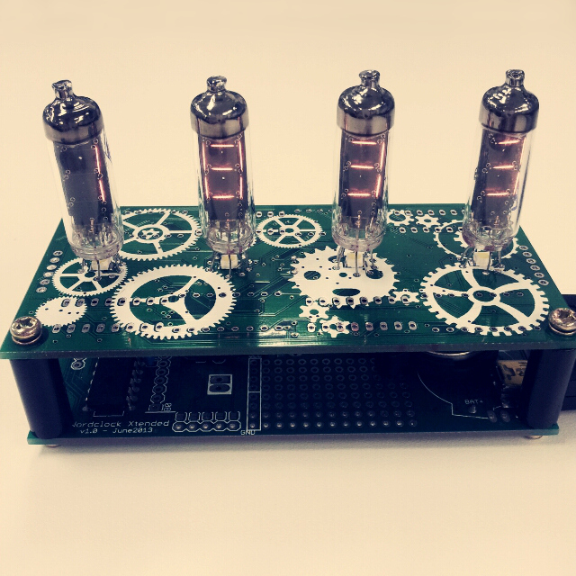

| Clocks | Guitar amp | Clapper | USB gadgets | Arcade cabinet | Laser cutter | ... and more! |
This slideshow requires Adobe Flash Player 9.0 (or higher). JavaScript must be enabled.
Projects of the moment: Tricolor USB alert
 Gameboy clock
Gameboy clock  ardReveil v6 Finger Password Keyboard
ardReveil v6 Finger Password Keyboard ← News ! What's up and fresh in my geeky world →
 2014-12-07 - One clock goes, one other take her seat
2014-12-07 - One clock goes, one other take her seatJust finished the ardReveil v4, quite happy. I will maybe tune it later adding more "colors and bling-bling" but now it's just fine. Now it's finished, I'll prepare for the next : ardReveil v6, the sibling of the Alan Numitron Clock but using VFD Numitron IV-6 tubes instead. Yeah I know it has been done, who cares. I didn't yet. And I will use the occasion to work on voltage booster (need 30v) and use maybe POV instead of driving with 74HC595. A good excuse to learn new things.
2014-12-02 - Ideas epiphany
Wow, 6 months was long and all the ideas my brained stored are popping out in front of my eyes now, need to write it down and order them in a pipe, otherwise I'm going to just dream but not do amything. Without a specific order:
- ardReveil v4 : a clock with a retro/steampunk style: electronics is done, only some bling bling left, drilling a few holes for leds and go for the final assembly!
- Repair - Galaxy note Still waiting for that flat tact-switch to close this one
- Finger Password Keyboard the next big thing: a key board that type your password after finger print scan - the next big thing
- DTMF card generator 'cause I'm sick of typing my typing my conference code and it's a good occasion to make a small n slick project (target is credit card size)
- Warning led for my server monitoring tools, running on my office PC a red/yellow/green led showing as USB HID (the challenge) and changes status when the scirpt running on the PC detect something wrong in Nagios
- Gameboy clock: open a legacy gameboy and reuse the display as a clock or whatever art stuff (hard). Or make a RTC gameboy cartridge (harder)?
- Bedside music player, basically just a mp3/radio player. Why make one and not buy one? Well ... I have the spare parts (now that I bought the electronics from eBay) and I could couple it with a nice smart alarm clock (and stop using my old cellphone)
- VFD vacuum tubes clock: yeah again a clock, yeah, but with IV-6 VFD tubes, 30v, nice blue...
- Binary clock: ok, this time I admit it I have a problem. But I must do something with that bag of 1cm bicolor 100%20 leds I got from Akihabara last January, the "lucky bags" season is just around the corner!
2014-11-16 - Back to work
After a nearly 6 months break the cold leads my back to my dent and my beloved toys. Some new, some not finished, but here's what's cooking:
- ardReveil v4 : a clock with a retro/steampunk style, exhumed from my idea box. Moving forward fine so far.
- Repair - Galaxy note that is still in progress but should be piece of cake (waiting for parts from almighty China/ebay)
- Finger Password Keyboard the next big thing: a key board that type your password after finger print scan
2014-04-20 - What to do (bis)?
Long time without post, I changed job and I way less free time than before. Doesn't mean I did nothing neither.
- Laser cutter is not making any progress, mainly because I don't touch it. Need a constant current driver and motivation.
- Circlez did a first version quite nice and waiting for the v2 board that has 2 circles of leds (30 %20 12) and make it a nice clock
- ESR meter forget it, I just bought one
- Bought a brand new and nice Hakko FX888D soldering station (I love it)
- I need to make IV6 version of the Alan numitron clock, just need to make a high (30v) boost, breadboard he thing and make a board in China.
- Repaired a friend's noise cancelling headphone : resoldering, troubleshooting. It's back on track now.
2014-01-21 - What to do?
Laser cutter is not making any progress, mainly because I don't touch it (duh). Why? I must admit I'm a bit afraid of playing with a high power laser and by the fact that even if I make it work (which I will!) it won't cut more than sheets of paper... "Most important is not the goal but the travel" yeah yeah I know just ... Anyway, I made my mind and I'll play with that and make an ESR meter , needed for repairs. I found one based on an Arduino, on a messy forum so let's make a clean summarized version and learn about the ESR .
2014-01-17 - Contact me!
I was contacted by a gentleman on the phone at my work and we had trouble to connect (I missed his call, sorry!). To contact me and set up an appointment, use the email written on the left border. I'm really interrested into talking with you.
I'm fixing gameboys recently since I bought a pack of them as junk on Yahoo auctions. Replacement screens are deceptively expensive even on eBay, so I can just resell 2-3 out of the 5. I sold one which was in next to perfect status. Other ones I'm cleaning them and changing led colors hoping to make forget the scratchs on the screen by a nice and unique led (white for black gameboy, pink for grey, ...) I'll put some pictures on this page.
2014-01-04 - Fixing mouse
My mouse stopped working so I got to do the Microsoft Bluetooth Notebook 5000 fix trick. And made a little Laser sight gun from a 100 JPY gun. But still no laser yet... got lazy and busy with other personal stuffs but it remains the next step.
2013-10-08 - Making stars
Laser cutter drew yesterday its first star! No laser yet, but it feels really promising !
2013-09-19 - Making videos
Laser cutter second axis has now stabilizing skates and I'm pondering how to fix the aluminium bed itself. I made a video on the Laser cutter page.
Also I bought a thorium gas mantle to test my Geiger counter : wow, it works just fine! Scarry! Again, there's a video on the (very short) page so check it out Geiger counter.
Oh and last but not least : I sold my first Alan numitron clock ! Youhou !! Thanks Takaya.
2013-09-05 - Readings on the net
Found a nice blog today. Guy is good ! Refurbished laptop as a all-in-one pc, scavenged chinese toy keyboard as a nice keyboard... looks nice (and strangely reminds me of my ideas ... except he's way better at realisation) http://okelectronic.wordpress.com/
Laser cutter will have its axis assembled this weekend (busy with work these days), so get ready for a nice video of 2 axis moving accordingly (youhouuuu)
2013-08-29 - Next projects
Laser cutter is not finished and still in progress (ok let's face it it's just started) but I found what my be one of my next projects : a Tempescope . It's an original way to show weather by reproducing it in a confined environment. Really watch this project on the main page (it's a opensource project) it really is worth knowing. Plus the maker put great effort making a easy to do step by step procedure. Thanks ! (plus he's also in Japan)
2013-08-27 - Artistic questions
Colleagues told me I should emphasis the "old russian" look of the Alan Numitron Clock. Does it mean something to you? I thought I could go steampunk with a copper box (short cut are guarantee though) and a few brass stuff - gears, screws, wires- I could solder on it ... maybe I'll give a shot later.
The Laser cutter you ask ? Well, buying Dead Space 3 put a serious hit on productivity but the Xenomorph aren't everything. Now the former scanner bed motor works : a nice bipolar stepper motor (96 steps a turn), and I'm happy that I did as usual and bought a secondcheap full H bridge (yup, ULN2003 aren't any good for bipolar I read). Now will come the time of serious assembly and wiring. And once the 2 axes will be here, we'll talk about getting serious retina burn or other fire hazard.
2013-08-16 - Summer projects continued
Alan Numitron Clock is finished and working nice on my desk. If I have to make a new version I'd change a thing or two (make the led under the tubes RGB maybe, review the bottom board to have a power USB at the rear ... ) but on the overall I'm happy with the result. I got comments from friends that a transparent plastic casing would be nice : so be it, let's give a try.
Laser cutter was paused a little but is on his own way : I can control the former printer head now and I can measure it's position. Control is far from perfect yet but at slow speed it should work ok for now. I start looking at the former scanner bed stepper motor and will try to make it move soon. Then comes time to assemble and find a laser diode...

...
edit
Edit resources http://blog.wikispaces.com/2009/11/advanced-customizations-for-your-wiki.html
Edit CSS http://kalshagar.wikispaces.com/stylesheet/edit/kalshagar
Icons http://www.iconarchive.com/show/mac-icons-by-artua.html